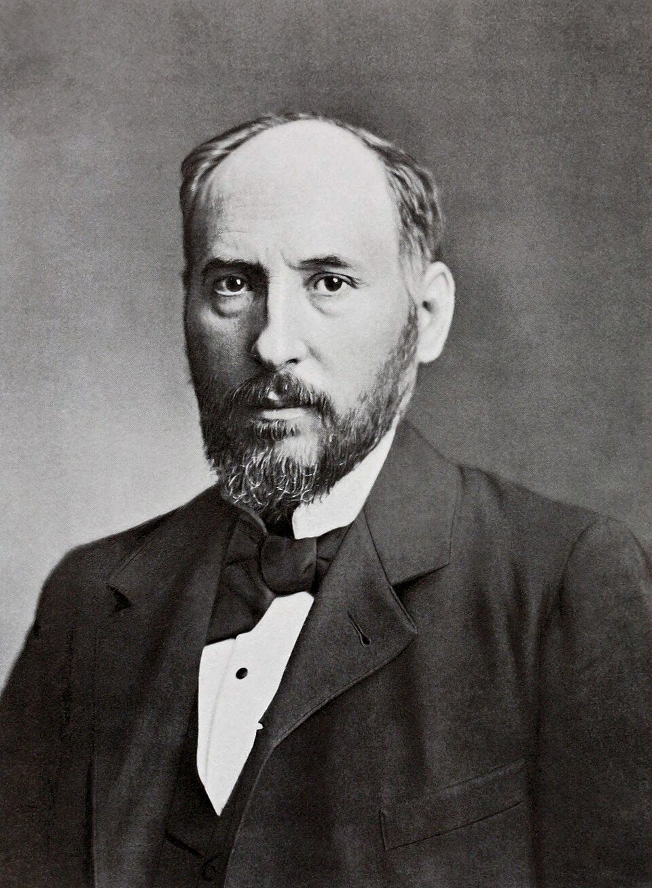

_portrait_(restored).jpg){kind=link}

The photograph at the top of Neurolopedia is a portrait of Santiago Ramón y Cajal (Petilla de Aragón, 1852 - Madrid, 1934), the most influential Spanish scientist in history and one of the founders of modern neuroscience.
A doctor who wanted to be a painter
As a child, Cajal wanted to be an artist. His father, a doctor, made him study medicine, but drawing stayed with him all his life. His nearly 3,000 drawings of neurons, made by hand while looking down the microscope, still appear today in textbooks and art exhibitions.
The neuron doctrine
In 1887, in Madrid, he came across Camillo Golgi's black reaction, a silver stain that coloured whole neurons. Cajal improved it and, from 1888 onwards, showed that the nervous system is not a continuous network, as Golgi believed, but is made up of independent cells that communicate by contact. We call this the neuron doctrine.
He also proposed that the nerve impulse travels in only one direction, from the dendrites to the axon, described the growth cone of developing fibres and anticipated brain plasticity: the idea that learning changes the connections between neurons.
A Nobel Prize shared with his rival
In 1906, Cajal and Golgi shared the Nobel Prize in Physiology or Medicine. In their lectures they defended opposing theories. The electron microscope, in the 1950s, proved Cajal right.
A school
In Madrid, Cajal trained a generation of researchers, the Spanish school of neurohistology: Pío del Río Hortega, Rafael Lorente de Nó, Fernando de Castro and Nicolás Achúcarro. His legacy lives on at the Cajal Institute of the Spanish National Research Council (CSIC).
Read his full biography on the Santiago Ramón y Cajal page.
Photo credits
The portrait is in the public domain and comes from Wikimedia Commons. The details of the file are in the caption on the home page.
Sources
- The Nobel Prize. Santiago Ramón y Cajal, biographical.
- Ramón y Cajal S. Recuerdos de mi vida (Recollections of my life). Madrid; 1917.
- Swanson LW, Newman E, Araque A, Dubinsky JM. The Beautiful Brain: The Drawings of Santiago Ramón y Cajal. Abrams; 2017.
- Instituto Cajal (CSIC). The Cajal legacy.